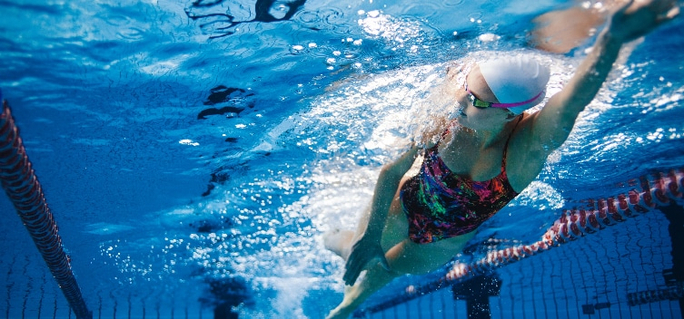

A natação é uma das atividades físicas mais antigas da humanidade, com raízes que remontam à antiguidade. Registros arqueológicos indicam que a prática de nadar existia em civilizações antigas, como os egípcios, que representavam a natação em pinturas nas paredes de tumbas, e os gregos, que consideravam a habilidade de nadar uma parte essencial da educação física. Os primeiros documentos sobre competições de natação datam de 2000 a.C., na Babilônia, onde eventos aquáticos eram celebrados. Com o passar do tempo, a natação se tornou uma atividade popular na Grécia e em Roma, onde piscinas públicas e cursos de natação eram comuns. A prática não era apenas recreativa, mas também fazia parte do treinamento militar.
No século 19, a natação competitiva começou a emergir como um esporte organizado, especialmente na Europa. Em 1837, a National Swimming Society foi fundada na Inglaterra, promovendo competições que atraíam grande público. Isso levou ao desenvolvimento de regras e estilos que formaram a base do que conhecemos hoje. A natação fez sua estreia nos Jogos Olímpicos modernos em 1896 para homens, com as mulheres se juntando às competições em 1912. Desde então, a natação se tornou um dos eventos mais populares dos Jogos Olímpicos, atraindo a atenção de milhões de fãs ao redor do mundo.
O desenvolvimento dos estilos de natação — como crawl, peito, costas e borboleta — também é um aspecto significativo da história do esporte. Com o tempo, técnicas e treinos se tornaram mais sofisticados, permitindo que nadadores alcançassem novos níveis de desempenho. Na era moderna, atletas como Michael Phelps e Katie Ledecky transformaram a natação em um espetáculo global, quebrando recordes e inspirando novas gerações. Com o avanço dos equipamentos e metodologias de treinamento, a natação continua a evoluir, solidificando seu lugar como um dos esportes mais admirados e praticados mundialmente. A história da natação é uma rica tapeçaria que entrelaça cultura, competição e inovação, refletindo a evolução de um esporte que tem fascinado a humanidade ao longo dos séculos.
Crawl – Com o corpo virado de frente para o fundo da piscina, os nadadores devem alternar braçadas e movimentos de perna.
Costas - Movimentos de braços e pernas alternado como no crawl, mas com o corpo virado de costas para fundo da piscina;
Costas - Movimentos de braços e pernas alternado como no crawl, mas com o corpo virado de costas para fundo da piscina;
Borboleta – Envolve um movimento contínuo e rítmico das pernas, semelhantes ao nado crawl. Os braços devem realizar um movimento circular simultâneo para a frente, saindo da água. Nesse momento, o nadador coloca a cabeça fora da água para respirar. Em seguida, os baraços voltam para à água com as mãos em forma de concha, gerando impulso para empurrar o corpo para a frente.